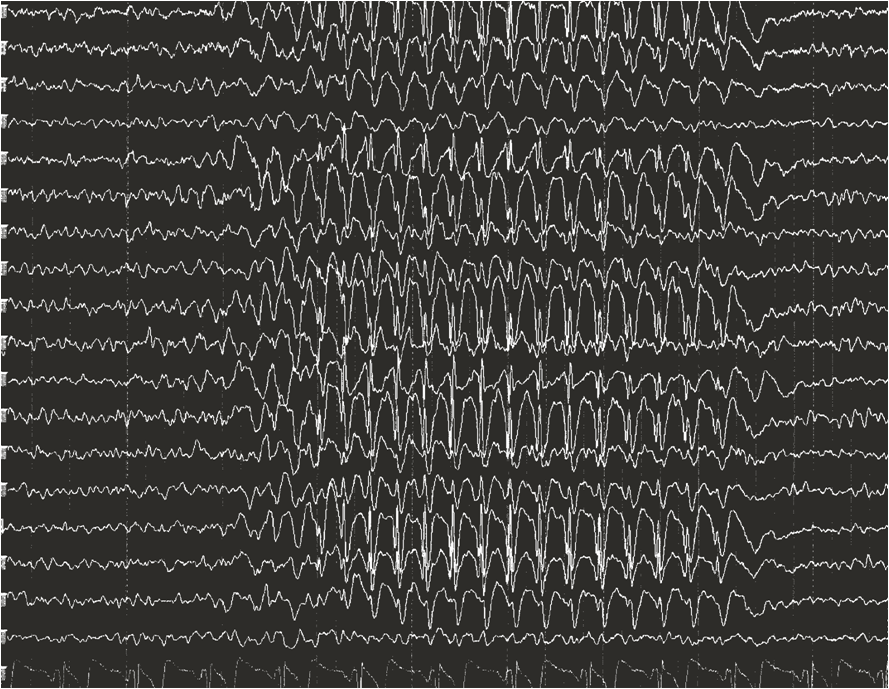

João e o desligar que a Ritalina não explicou
Um aluno antes atento passa a “desligar” dezenas de vezes por dia. O psicoestimulante não toca o quadro. Antes de colar um rótulo escolar, leia o padrão temporal.
1. O aluno que “não é mais o mesmo”
João, 8 anos, sempre elogiado por ser atento e participativo. Nas reuniões de pais a queixa muda: “não é mais o mesmo”, parece não prestar atenção em sala; as notas caem e o desinteresse pelas matérias cresce.
2. Olhar fixo, ~30 vezes por dia
No futebol, o ex-craque do colégio parece perdido no campo; os amigos não o querem mais no time. A mãe vigia: episódios de olhar fixo e “desligar do mundo” por segundos, cerca de 30 vezes por dia.
3. Ritalina que falha
Conduta inicial no caso: Ritalina e observação por 1 mês — sem resolução; os episódios continuam. O fármaco do rótulo escolar não toca o mecanismo.
4. Hipótese sindrômica, não rótulo escolar
Pergunta-âncora: qual a hipótese diagnóstica mais provável diante desse padrão? A abordagem começa pelo raciocínio sindrômico — padrão temporal e neurológico da queixa — antes de colar o rótulo escolar.
João, 8 anos · desliga por segundos, cerca de 30×/dia, piora escolar e no futebol. Ritalina por 1 mês: zero resposta. Hipótese em aberto — não fechar TDAH por rótulo.
Padrão súbito, breve, muito frequente, com retomada imediata e impacto escolar → desligamentos recorrentes colocam epilepsia no diferencial sindrômico. O nome da síndrome fecha quando o EEG entrar.


Quiz · P1 2 perguntas · resposta com feedback
Q1. João, 8 anos: olhar fixo por segundos, cerca de 30×/dia, piora escolar, Ritalina sem efeito. A melhor primeira leitura é:
Q2. A conduta Ritalina + 1 mês no caso foi inadequada principalmente porque: